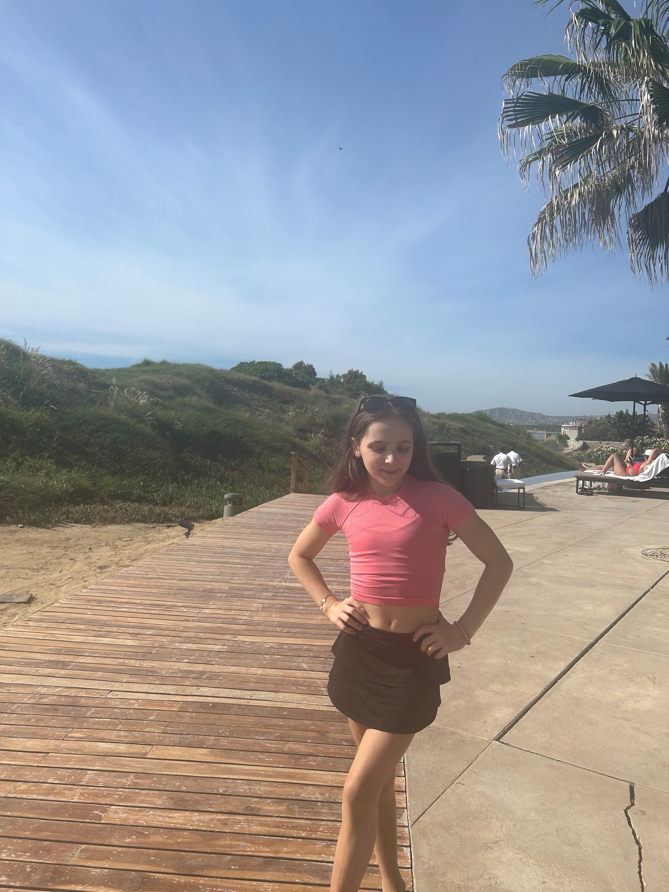

Here are some of my intrests!

Gymnastics
I am a gymnast who practices Monday, Tuesday, Wenseday, Friday, and Saturday. Monday, Tuesday, and Wenseday are 4 1/2 hours, Friday
is 4 hours, and Saturday is 5 hours and 15 minutes. It takes a lot of time and dedication!
The basics
- My favorite animal is a dog.
- My favorite artist is Billie Ellish!
- My favorite color is light pink or navy!
- My favorite winter sport is skiing!
- My favorite hobby (outside of gymnastics) is baking!
- My favorite vacation is on hte beach somewhere warm!
- My favorite place in the U.S is New York or Hawaii!
- My favorite place in Washington is Lake Washington or the mall!
- My favorite food is pasta, specifically rigatoni vodka pasta!